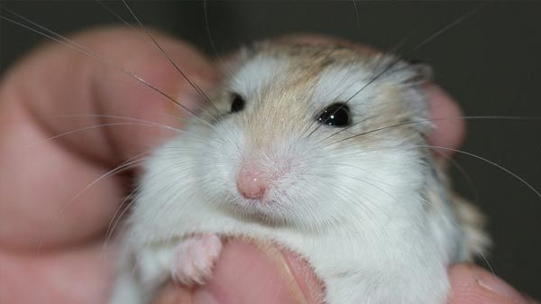
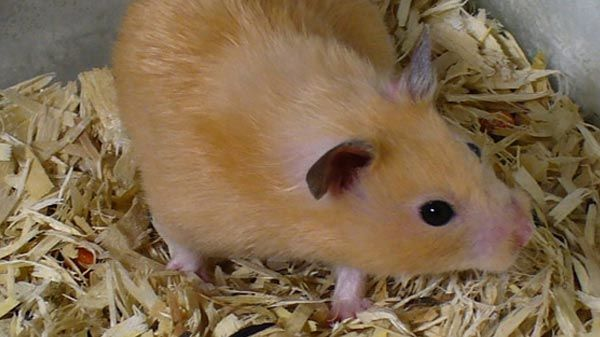

¿Qué son los hámsters?
Los cricetinos (Cricetinae) son una subfamilia de roedores, conocidos comúnmente como hámsteres (un germanismo). Se han identificado diecinueve especies actuales, agrupadas en siete géneros. La mayoría son originarias de Oriente Medio y del sureste de los Estados Unidos. Todas las especies se caracterizan por las bolsas expansibles, llamadas abazones, ubicadas en el interior de la boca y que van desde las mejillas hasta los hombros. Al ser muy fáciles de criar en cautiverio, son ampliamente usados como animales de laboratorio o como mascotas.
Tipos de hámsters |
|||||||||
| Hámster ruso |  |
||||||||
| Hámster de Roborowski |  | ||||||||
| Hámster sirio o dorado |  | ||||||||
| Hámster chino |  |
||||||||
| Hámster enano de Campbell |  |
||||||||